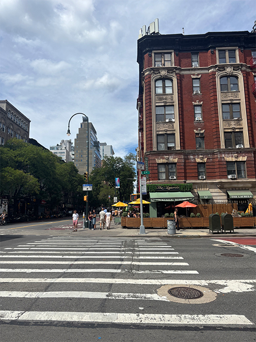

Once I reach East 15th Street, the city feels more awake. A man gives his corgi a treat while joggers and cyclists pass by. A couple in matching outfits walks hand in hand. On the busy sidewalk, I notice a man sleeping on the ground with binoculars hanging from a large silver chain around his neck.
At East 13th Street, I turn right. I like this block because it feels calmer, less crowded, and a little nicer. I pass an apartment building I am jealous of, followed by an Asian restaurant that almost always has a line outside.
Walk onto 3rd Ave